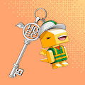 Hyundai E&C 75th Anniversary NFT HDEC75是现代建设为纪念75周年而推出的首款PFP NFT 。与Meta Toy DragonZ合作，以HDEC75开启现代建设的新元世界，共创未来！ 韩
Hyundai Metamobility - Shooting star 你有没有想过流动性可以走多远？对我们而言，Metamobility 意味着人类触及的无限可能性。 在这里，您可以自由地从现在走向未来。眨眼间，从
I am Kevin ▶ 什么是我是凯文？ 我是 Kevin 是一个 NFT（非同质代币）集合。存储在区块链上的数字艺术品集合。 ▶ 我有多少 Kevin 代币存在？ 总共有 2,222 个我是 Kevin NFT。目前，
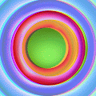 I Like You, You're Weird 由 Amber Park 和 Mason Rothschild 创作的由社区推动的收藏品项目。在我们收藏的 10,000 个怪人中，没有两个是相同的——就像人类本身一样。想想每个怪人铸造的那个持有人内心怪人
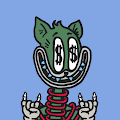 I Miss The Old Days ▶ 什么是我想念旧时光？ I Miss The Old Days 是一个 NFT（非同质代币）集合。存储在区块链上的数字艺术品集合。 ▶ 我想念旧时光代币有多少？ 总共有 6,969 个 I Miss The Old
IA PUNKS by NFTHUNTERS homage japan 加入 Tegro 使用我的链接的候补名单，我们每人可以获得 0.5 TGR。成为 web3 游戏中下一件大事的一部分。我们很高兴地宣布 第 5 个分数 蓝筹 NFT 就在 门口！ 巨大的空投
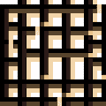 Iceman Olaf 在 NFT 的下一个级别愿景中，我们购买带有隐藏数字的 NFT。 最多 6 个 NFT 这个数字是获胜组合。每次售出代币都会参与下一次尝试。每当此系列中的 NFT 售罄时，
Icy Founders Club 冰冷的创始人俱乐部加入 Icy Founders Club 以获得对icy.tools的完全访问权限，访问 Founders Club Discord频道等。在club.icy.tools了解更多信
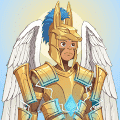 Idols NFT ▶ 什么是偶像 NFT？ Idols NFT 是一个 NFT（Non-fungible token）集合。存储在区块链上的数字艺术品集合。 ▶ Idols NFT 代币有多少？ 总共有 9,999 个
If Only: Once Again ▶ 什么是如果：再一次？ If Only: Once Again 是一个 NFT（不可替代令牌）集合。存储在区块链上的数字艺术品集合。 ▶ 有多少 If Only: Once Again 代币存在？ 总共有 2,790 个 If Only: Once Again
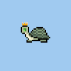 ILikeTurtles ▶ 什么是 ILikeTurtles？ ILikeTurtles 是一个 NFT（Non-fungible token）集合。存储在区块链上的数字艺术品集合。 ▶ 有多少个 ILikeTurtles 代币
illogics illogics 于 4 月 5 日诞生，是一个以社区、实用程序和透明度为中心的 NFT 项目。我们帮助我们的持有者消除 web3 的噪音并结束研磨。 拥有 illogics NFT 的好处包括： 由 illogics 提供支持
Illuvium IDO Collection Illuvium 是一款建立在以太坊区块链上的开放世界 RPG、怪物收集器和自动战斗游戏，将于 2022 年在 PC 和 Mac 上发布。在图形丰富、生动逼真的科幻冒险中玩来赚钱，征
Imaginary Ones Official (I.O) Imaginary Ones 是一个令人愉快的 3D 动画艺术，包含 8888 个独特的 NFT。Imaginary Ones 希望重新点燃您的火花，拥抱创造力并为您的梦想而努力。欢迎来到想象世
Immortal Ape - I.A IMMORTAL APE 是 3,333 种可升级的下一代猿的私人收藏——独特的数字收藏品。猿作为 ERC-721 令牌存储在以太坊区块链上并托管在 IPFS 上。不朽猿社区在 4 天内增长到 100,000 名不和谐成
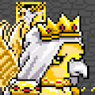 ImmortalPhoenix ▶ 什么是不朽凤凰？ ImmortalPhoenix 是一个 NFT（Non-fungible token）集合。存储在区块链上的数字艺术品集合。 ▶ ImmortalPhoenix 代币有多少？ 总共有 999 个 ImmortalPhoenix NF
Immortals Futbol Club 每个 IMMORTAL 都是手工制作的 1/1 数字艺术作品。他们的使命是为全球有抱负的青年足球运动员创造机会。我们的目的是平衡竞争环境，并为那些没有足够幸运拥有足够
Impact Theory Founder's Key 改善某人生活的最好方法是向他们介绍有用的想法。介绍有用想法的最佳方式是讲故事。 抓住一把钥匙，开启讲故事的未来。 Founders Keys 分为三个不同的等级：无情、
Impermanent Digital 作为一个以艺术为先的社区，Impermanent Digital 将始终支持艺术家的 NFT 之旅 通过 ID 艺术计划，选定的艺术家将在 Foundation 上支付他们的造币厂/上市费用。 许
Jay Pegs Auto Mart ▶ 什么是 Jay Pegs Auto Mart？ Jay Pegs Auto Mart 是一个 NFT（不可替代代币）系列。存储在区块链上的数字艺术品集合。 ▶ 有多少 Jay Pegs Auto Mart 代币？ 总共有 6,700 个 Jay Pegs Auto Mart N
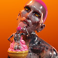 Jeffree Star X Marcelo Cantu Jeffree Star X Marcelo Cantu 是什么时候创建的？Star X Marcelo Cantu 尚未开始铸币，或者我们尚未收集铸币数据。Jeffree Star X Marcelo Cantu 有多少特质？我们还没有索引任何独特的
Jenkins the Valet: The Writer's Room 这些 NFT 解锁了一个仅限会员的 Web3 身份验证门户，以对定义元节的故事行使投票权和创造性指导。用作作家室通行证的 6942 个 NFT 让您有机会将角色授权给故事，对所
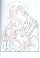 JESUS CHRIST NFT V2 ▶ 什么是耶稣基督？ Jesus NFT Christ 是一个 NFT（非同质代币）集合。存储在区块链上的数字艺术品集合。 ▶ 有多少 Jesus NFT Christ 代币？ 总共有 41 个 Jesus NFT Christ NFT。目前 22 位
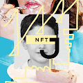 JingleBe NFT COLLECTION JingleBe 是您的第二个由音乐制成的皮肤，它带有由 AI 生成的独特艺术品和面孔。这些人不存在。每个 JingeBe 都是由两位充满爱意的音乐家制作的，并带有作为 IPFS Hash 的高质
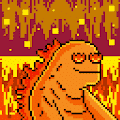 Jira Mfers ▶ 什么是 Jira Mfers？ Jira Mfers 是一个 NFT（非同质代币）集合。存储在区块链上的数字艺术品集合。 ▶ 有多少 Jira Mfers 代币？ 总共有 555 个 Jira Mfers NFT。目前，34
JiraBibiz JiraBibiz 的信息是在 NFT 空间中传播和平。瓦格米。目前没有实用程序，如果 mint 和 secondary 顺利的话，我们可能会计划扩展这个 NFT 的实用程序。 ▶ 什么是 JiraBibiz？
JK KeyCard 这个 JK KeyCard 背后有很多好处，甚至更神秘。 ▶ 什么是 JK 钥匙卡？ JK KeyCard 是一个 NFT（Non-fungible token）集合。存储在区块链上的数字艺术品
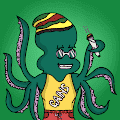 JocktopusCentral 前 500 个现已推出，您可以领取。快速获取它们并快速获取它们。这些buff章鱼是未来！！！！ ▶ 什么是 JocktopusCentral？ JocktopusCentral 是一个 NF
Joey Mob ▶ 什么是乔伊暴徒？ Joey Mob 是一个 NFT（非同质代币）集合。存储在区块链上的数字艺术品集合。 ▶ 有多少 Joey Mob 代币？ 总共有 5,500 个 Joey Mob NFT。目前，1,31
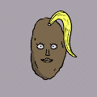 Johnny Depp's Amber Turds ▶ 什么是约翰尼德普的琥珀粪便？ Johnny Depp 的 Amber Turds 是一个 NFT（非同质代币）系列。存储在区块链上的数字艺术品集合。 ▶ Johnny Depp 的 Amber Turds 代币有多少？ 总共有 5,000 个 Johnny
Klay Kingdoms KINGs 这 10,000 个 KINGs NFTS 是第一个在 Klay Kingdoms 生态系统中提供的，这是一个 Web3 空间，将 DeFi 和 GameFi 的世界结合在一个复古 RPG 启发的元宇宙中。他们将在 Klay Kingdoms 的游戏和 DEX 部分提供广泛的
KlayDino Baby 由于 KlayDino NFT 被质押进行挖矿，拥有者数量比实际数量少很多。 欢迎来到克莱迪诺的家。克莱迪诺为拯救地球而生！Klay Dino 是收藏品 NFT 艺术专门和独家设计的基
klaymfers Klaymfers 继承了 Sartoshi 创造的 Mfers 精神。获取 Klaymfers，享受您的加密生活。那就是我们，克莱姆弗斯。非官方的克莱姆弗斯不和谐。klaymfers 是一个